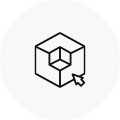
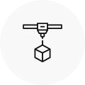
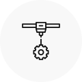
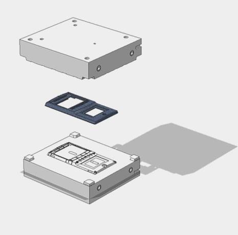
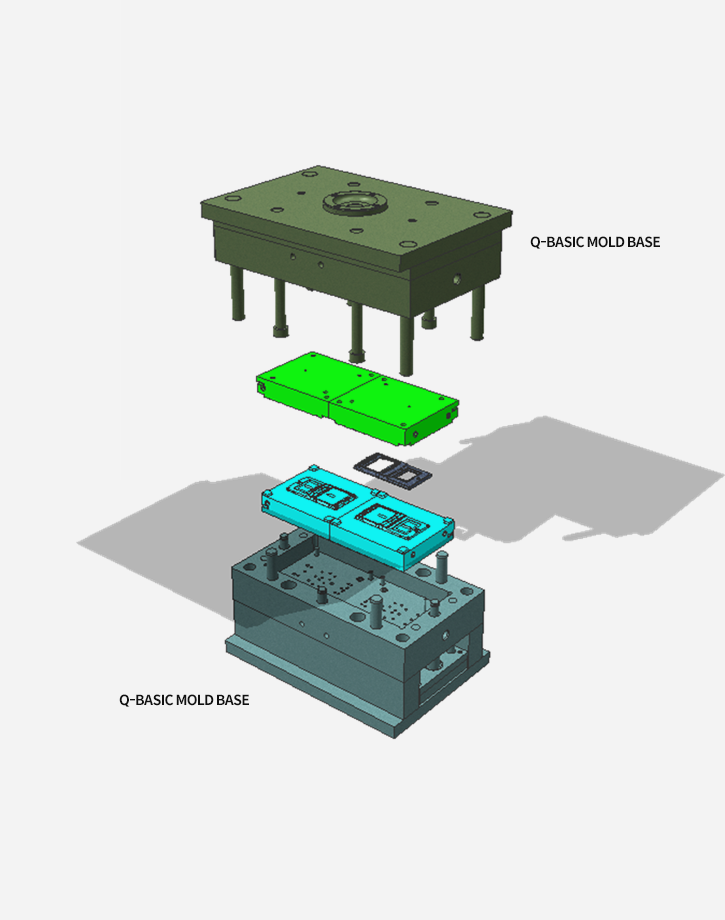
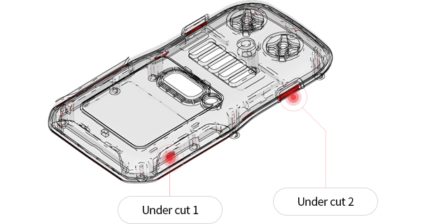
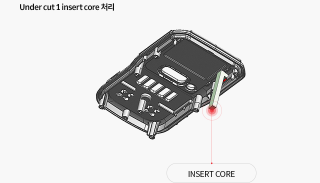
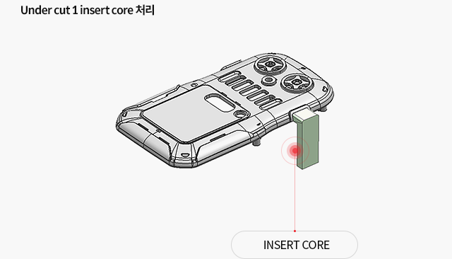

Q-Program
이에프텍은 지속적인 연구개발과 축적된 기술력을 바탕으로 최상의 제품을 생산합니다.
Q-Basic
- 주요 특징
-

당사 보유중인 표준 Q-Program 몰드베이스를 사용하여 Core 만 제작하는 방식입니다.

목업 제품에서 확인할 수 없는 사출 문제점 (조립성 등) 확인이 가능하며, 1~2회의 금형 수정을 통하여
양산 금형의 문제점을 보완하고 진행 가능 여부를 판단할 수 있습니다.
DR7079 (두랄루민) 소재 사용으로 최대 1,000 shot까지 보장합니다.
원하는 성형 재질을 선택할 수 있으며 단기간 내 납기가 가능하여 고객사의 SAMPLE 제작에 용이합니다.
양산 금형의 30~40% 제작 비용과 7~15일의 제작기간이 소요됩니다.

코어 냉각 및 온수, 온유 설치가 되지 않아 별도의 후가공 처리가 필요한 경우가 있습니다.
Basic 금형 기본 사항
- 코어 재질 : Aluminum (DR 7079)
- 몰드베이스 : 당사 Q-PROGRAM MOLDBASE 사용
- 금형 보장 수량 : 1,000 Shot
- 사출 재질: PC or ABS,et
- 제작 기간 : 7일~15일
※ 제작 기간은 모델의 품목에 따라 변경될 수 있습니다.


견적신청
Gallery
Undercut processing method
- Q-Basic Undercut 처리는 수작업 방식입니다.
- Undercut 길이 형상에 따라, “Advance” 제작이 필요한 경우가 있습니다.
- 온라인 견적 산출 후 별도 문의가 필요합니다.



Basic 금형 견적 기본 사항
- 코어 재질 : Aluminum (DR 7079)
- 몰드베이스 : 당사 Q-PROGRAM MOLDBASE 사용
- 금형 보장 수량 : 1,000 Shot
- 사출 재질: PC or ABS,et
- 제작 기간 : 7일~15일
- 제작 비용 : 양산 금형의 30~40%